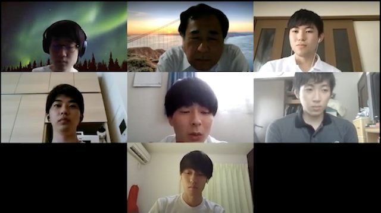
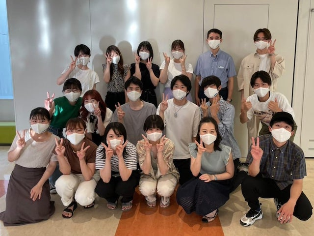
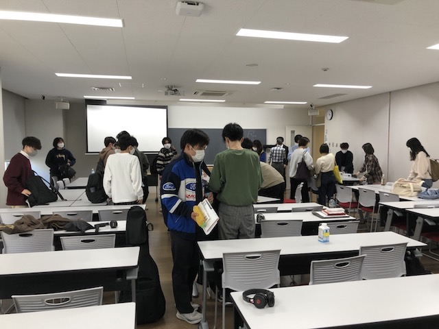
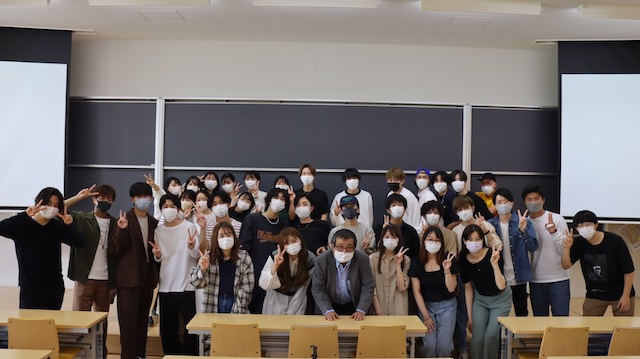
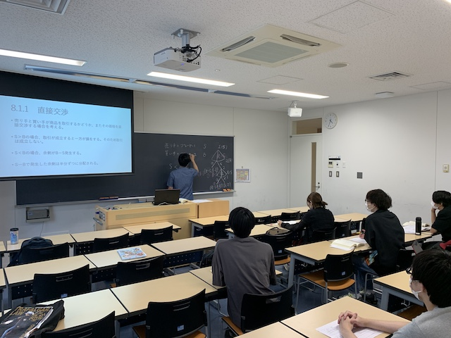
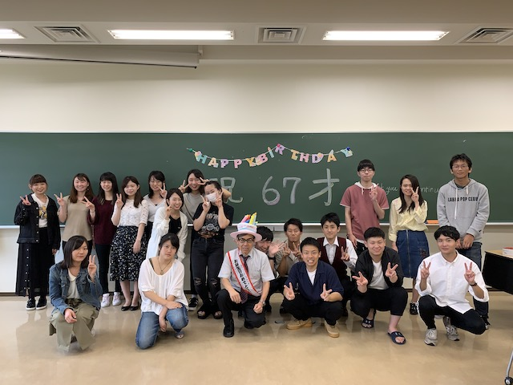
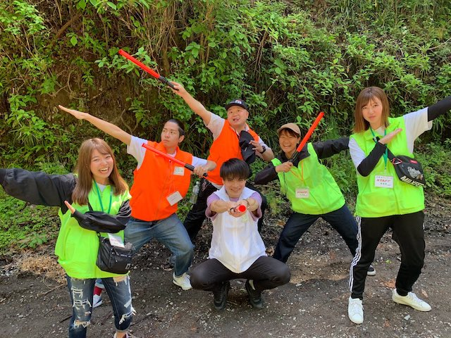
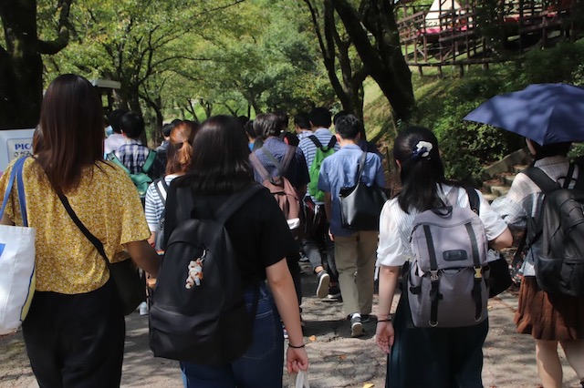
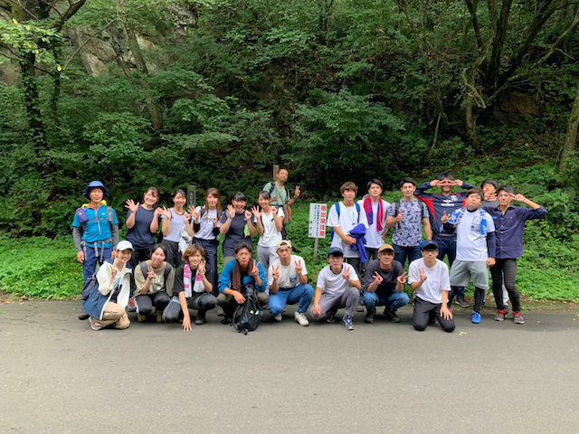
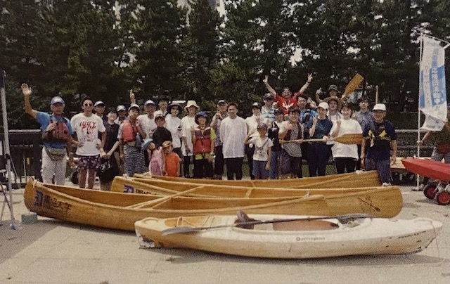

【経済学部】
〜経済学科〜
倉橋透ゼミ

倉橋ゼミでは、現実の経済で起こっている事象をとりあげ、議論の仕方を学びます。今取り上げているのはSDGsで、グループごとに一つの目標を選び議論の上で発表し、さらにゼミ生全員で議論をしています（例えば、先週はまちづくり）。
4年生は卒業研究をし、3年生の前で発表します。なお、コロナ前は、道路等インフラの工事の現場を見学したり、草加市内の企業のCMを草加市、草加商工会議所とともに作成したりしていました。
YouTube
Web-site
高安健一ゼミ

高安ゼミでは、学生が自らの学びをプロデュースする力をつけることを重視します。
開発経済学を縦軸、他の学問分野を横軸に、自ら設定した課題に取り組みます。国内外の課題を解決するためには、ものづくり、制度構築、デザイン等の知識も必須です。
学生はこうした能力を「プロジェクト遂行を通じた課題解決型の学び(PBL)」を通じて着実に身に付けます。プロジェクトを含むゼミ活動全体で、「持 続可能な開発目標(SDGs)」への取組みを強く意識します
〔演習Ⅰ〕テキストの精読、討論力の向上、期末レポートなどで、基礎学力を多面に涵養します。
〔演習Ⅱ〕PBLは、学生主体の本ゼミの真骨頂です。自ら課題を設定してチームを組成し、企画書作成、情報の収集・分析、専門家や企業へのヒアリング、報告 書作成、研究成果の発表等に取り組みます。
〔演習Ⅲ〕卒論執筆を含め、学びの集大成を試みます。
Facebook
Mail
全載旭ゼミ

開発経済学とは開発途上国の経済発展を対象にする経済学の一分野で、途上国の貧困を削減して人々を幸せにするという社会的な重要な役割を担う学問です。
途上国の貧 しい人々が貧困から脱出するためには何より経済成長が不可欠です。
この演習では開発途上国がどのように経済的に発展していくのかというメカニズムやそのための必要な経済政策について勉強を進めていきます。
近年東アジアの急速な発展と域内諸国の相互依存関係の強化によって、東アジアは世界経済を牽引する存在になっています。なかでも中国経済の動向は21世紀の世界経済の新たな秩序を左右する最大のファクターの一つであります。
2010年には中国は米国に次ぐ世界第2位の経済大国になっています。本演習では東アジア全体に目を配りつつ、日本経済や中国経済を中心にアジア経済全般の動向について学んでいきます。
本演習を通じて、東アジアの地域のあり方に関心を向けてもらいたいです。最近急速に緊密化しているアジア経済関係の現状と今後の米中対立のあり方にもついて議論します。
Mail
森永卓郎ゼミ

森永ゼミは、学問の追求ではなく、学生が人前できちんと自分を表現できるようにすることを目的にしています。そのため、森永は基本的な枠組みを示すにとどめて、何を研究するのか、どう発表するのかは学生の自主性に任せています。特にゼミ合宿を最大の舞台と位置づけています。
また、ゼミはオープンをモットーにしていて、年次を超えての交流や卒業生もゼミに参加します。他ゼミの方でも自由に参加していただけますので、お気軽にどうぞ。
Instagram
Mail
吉田翔平ゼミ

【学習内容】産業組織論は、企業間の様々な局面(価格や生産量の決定、参入や退出、広告や研究開発など)での駆け引きの帰結を導出し、その結果が社会的に望ましいのか、もし望ましくないのなら、どのような政策をとるべきなのかを考える分野です。
一方、企 業の観点からすると、自社が置かれている状況下で、どのような戦略を選べばより利潤を高めることができるかを分析するという意味で、経営の経済学との隣接分野になります。
【演習Ⅰ テキストの輪読 & 日経新聞報告】ゲーム理論に関する入門書を輪読します。プレゼン担当、質問担当に分かれて全員 参加を目指します。ここでは、ゲーム理論の知識を得ることはもちろんですが、『論 理的な会話』ができるようになることを最大の目標としています。
同時に、日本経済新聞から興味がある企業行動を選び報告するということも行なっています。これによって、企業行動を分析するための研究ネタ探し、そして社会に目を向け、見識を広げるという二つの目標を達成することを目指します。
【演習Ⅱ テキストの輪読 & グループ研究】この時点で、グループで研究する題材について考えてもらいます。企業行動や経済現象について深く考え、自分自身で問いを立てることを目標とします。
自身で立てた問いを分析するために産業組織論に関するテキストを輪読します。こ こでは産業組織論の概要を学ぶとともに、研究で使用するモデルの分析方法について 学習します。
【演習Ⅲ 卒業論文の作成】卒業論文の指導、進捗報告を中心に進めます。研究については、学内のプレゼンテーションコンテストまたは対外的に報告する機会があれば参加してもらいます。
Mail
〜経営学科〜
内倉滋ゼミ

(1)公務員試験に出題される「数的処理」とか「数的推理」と呼ばれているテーマを、‘学 問をすること一般に関する基礎的なスキル’という観点から、 ゼミにおいて実施したい。
(2)‘会計学に関する基礎的なスキル’を修得する目的で、“日本商工会議所簿記検 定試験2級に合格”という目標を、各自 持ってもらいたい。むろん、ゼミの時間内でも、 指導していきます。
(3)会計学の原理にかかわるテーマにつき、グループ研究を実施したい。
(4)以上を前提として4年次に、「会計学の原理に関する研究」という演習のテーマに関連した卒業論文を、概略16,000字程度の分量で書いてもらいます。
Mail
高松和幸ゼミ

○ 地域から学び、地域に還元するというミッションを掲げて活動をしていま す。活動では、企画・立案から準備・成果を公表しています。
○ 地域やNPO関係者と協働して、まちづくりや地域イベントの支援をしま す。企画したイベントの運営や地域から多くを学び取れるように工夫をし ています。
○ 地域活性や地域連携が課題です。思いもかけない成果がでることを目的と しています。そのためには、自身の研鑽と活動(コミュニケーションや挨 拶、言葉使いや振る舞い、さらには責任感など)が求められます。
○ 災害(防災)研究も行います。災害に強いまちづくりの一環として地域の マップづくりをしました。また、埼玉県の防災インストラクターとしての 活動もしています。
○ 防災の視点では、事前に災害を防ぐことを前提に企画立案しています。
Web-site
Instagram
堀江郁美ゼミ

現在、ウェブアプリケーションの裏で、多くの場合データベースが利用されています。
この演習では、ウェブアプリケーションの仕組をはじめとして、ウェブやデータベース などの情報科学の基本的事項や、データの処理方法、プログラミング、映像編集方法などを学習します。
最終的には、成果として各自テーマを選び、ウェブアプリケーションを作成・発表し、レポートとしてまとめます。
Mail
松本守ゼミ

松本ゼミは「ファイナンス（Finance）」と呼ばれる学問分野を勉強しています。
ちょっと堅苦しく言うと，松本ゼミは(1)企業(株式会社)を取り巻く「お金」の流れ(資金調達・投資・配当：お金を集めて，うまく使って，儲けをみんなで山分け)や(2)金融資産(株式など)の価格決定(リスクとリターンの関係)について勉強しています。
Mail
〜国際環境経済学科〜
大竹伸郎ゼミ

・グローバルレベルとローカルレベルで同じ事象や産業がどのように異なるのかといった視点や、経済活動の基盤となる自然環境の特徴、生産者と消費者そしてそれらを繋ぐ流通業といったサプライチェーンの現状などを理解することで、物事を多方面から捉えて理解する地理学的なものの見方、考え方を身につける。
・グリーンツーリズムやエコツーリズムの学習を通して、持続可能な観光や産業の在り 方について考える。さらに、現地での調査を実施し、観光業を媒介とした都市と農村地 域連携の可能性や地域振興へ向けた課題などを考察する力を養う。
Mail
米山昌幸ゼミ

演習題目：SDGs実践と持続可能な社会の創造
このゼミでは、国際社会や地域社会の抱える持続可能性の問題に、経済学的視点からアプローチし、課題解決に向けて実践的に行動するPBL(Project-Based Learning)に取り組みます。
SDGs実践により、テキストの輪読で必要な知識を身に付けるとともに、社会をどのように変えていけるかを考えて論文やプロジェクトに取り組むことで、創造的問題解決能力を養成します。
Eart Week Dokkyo ホームページ
Facebook
Mail